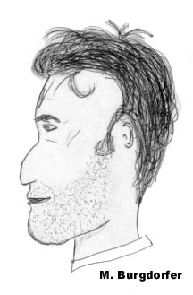

Willkommen auf der "Nur Schüler" Seite!
Hier findest du die verschiedensten Sachen über das Schuhlhaus, deren Lehrer und Lehrerinnen....

Und jetzt eine kleine Preisfrage: Wer ist dieser Lehrer?
kleiner Tip: blauer FIAT
Besitzt auch du eine schöne Karikatur oder ein Foto von einem lustigen Lehrer, bitte Senden an mburgdorfer@hotmail.com
Einige Lehrerwitze!
Lehrerin: "Wenn ich sage: 'ich bin Krank'" - was ist das für eine Zeit?"
Max: "Eine sehr schöne Zeit!"
Lehrer: Hört mal! Es gibt zwei Wörter, die ich nie mehr von Euch hören will. Das eine ist "affengeil" und das andere "saudoof" !
Schüler meldet sich: "Geht in Ordnung. Wie heissen die beiden Wörter?"
Die Schulklasse ist zusammen mit ihrem Lehrer fotografiert worden. Der Lehrer empfiehlt seinen Schülern, sich Abzüge machen zu lassen.
"Stellt euch vor, wie nett es ist, wenn Ihr nach dreißig Jahren das Bild wieder zur Hand nehmt und sagt: Ach, das ist ja der Paul, der ist jetzt auch Lehrer; und
das ist doch Fritz Lehmann, der ist Bäcker geworden; und da steht doch der Heiner, der ist nach Amerika ausgewandert..."
Ertönt da aus der letzten Reihe eine Stimme: "Und das war unser Lehrer, der ist schon lange tot!"
"Und was geschieht, wenn du eins der zehn Gebote brichst?",
erkundigt sich der Pfarrer in der Religionsstunde.
Mäxchen meint nach kurzem überlegen:
"Na, dann sind's eben nur noch noch neun!"
Wer fliegt schneller vom Dach, ein Lehrer oder eine Blondine??
Die Blondine, der Lehrer muss erst nach dem Weg fragen.
Was ist die Steigerung von "lehr"?
Antwort: "Lehrer!"
Was ist der Unterschied zwischen der Schule und einem Irrenhaus?
Antwort: die Telefonnummer! N
Der Lehrer fragt: "Wenn 400 Hennen pro Tag 400 Eier legen, was hat man dann am Ende der Woche?"
Antwort: einen erschöpften Hahn.
Ein höherer Beamter vom Kultusministerium besucht die Schule und testet: "Nennt mir doch mal Eigenschaftswörter,die euch
geläufig sind." Schon tobt es durcheinander: "Saublöd, abartig, doof, bescheuert, beknackt, pissig, angepilzt, ätzend..." Der
Beamte entrüstet zum Referendar: "Von wem haben die Kinder nur solche Ausdrücke gelernt?"
Der Referendar: "Was weiß ich, von wem diese lausigen Kacker so was lernen."
"So ein schreckliches Zeugnis!", tobt der Vater. "Für so was müsste es eigentlich Prügel
geben!" Der Sohn ist begeistert: "Das ist eine Superidee! Ich weiss, wo mein Lehrer wohnt."
Drei Knaben müssen nachsitzen. Endlich sagt der Lehrer: "So, jeder von euch buchstabiert
mir ein Wort. Wer das richtig kann, darf nach Hause gehen." Er wendet sich an den ersten
Knaben: "Hansli, buchstabiere 'Haus'." - Hansli überlegt kurz und sagt: "H-A-U-S." - "Prima,
und nun zu dir, Fritz. Buchstabiere 'Maus'." - Fritz: "M-A-U-S." - "Sehr gut. Und du, Achmed,
buchstabiere mir 'Ausländerdiskriminierung'...." N
Noch was: Diese Witze stammen nicht von mir (kein Witz)!
NDuke Nukem LevelN
Endlich!!!! Jetzt gibts das Munzinger Schuhlhaus virtuel! Nun kannst du in deinem Schuhlhaus gegen deine Kollegen ein heisses Duell spielen! Vorausgesetzt du hast
Duke Nukem 3d v.3d dann lade HIER (66K) das Munzinger Schulhaus herunter! Das Level ist gut geeignet für 2-8 Spieler im Deathmatch.
Ein sehr komplexes Level mit viel Munition und grosse offene Flaechen, fuer spannende Duelle:
-Turnhalle Munzinger und Rasen
-Schuhlgarten und Pausenhof
-Alle Schulzimmer des 1. und 2. Stockwerkes
-Lehrerzimmer und Büro
-Relief im 2.Stock
-Bibliothek
-und, und, und....
 |
Von der Weissenstenstrasse aus gesehen... |
 |
Der Haupteingang |
 |
In der Turnhalle |
 |
Auf dem Pausenplatz |
 |
Der Schuhlgarten |
 |
In der Bibliothek |
 |
Das Relief |
 |
Das Physikzimmer |
Freigegeben ab 16 Jahren!!! (das ist mein Ernst!!!)